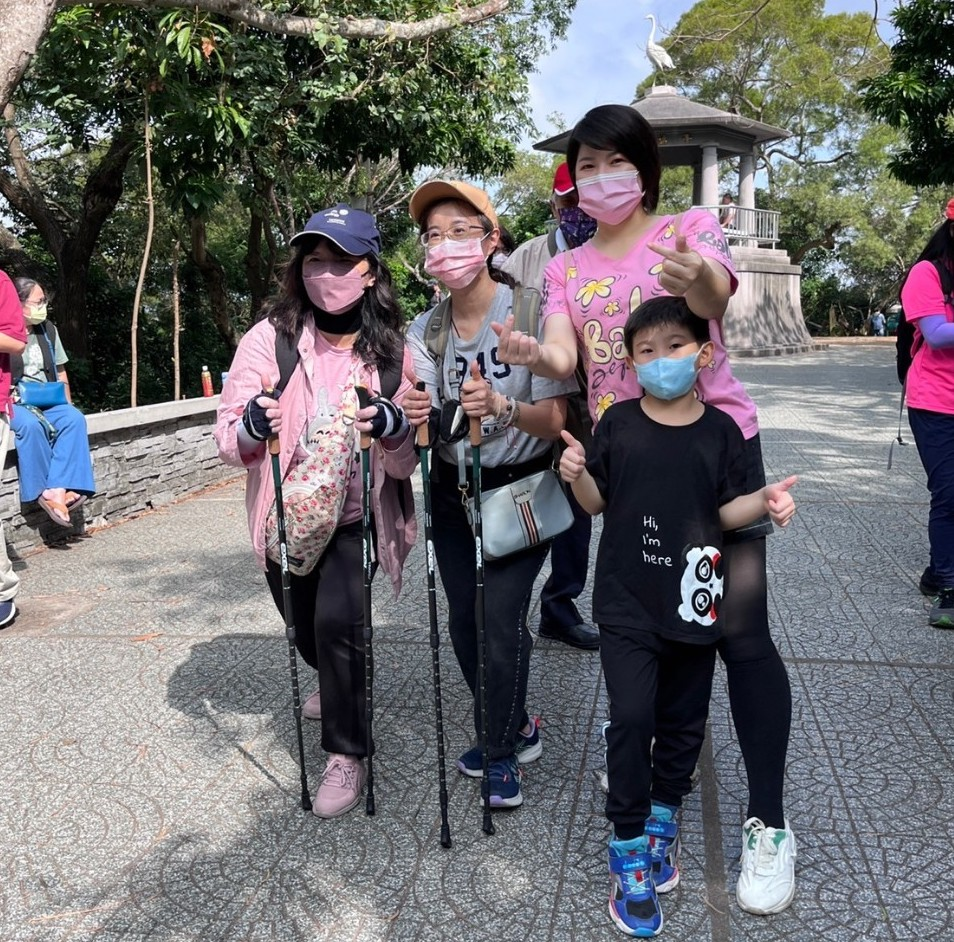

十八尖山 使用健走杖健走活動
111年11月20日早上 10點，科學城上方保健社團舉辦了使用健走杖健走活動。10點左右，在十八尖山入口處， 校長、主任、老師、同學使用健走杖一起跟著兆熊老師開始健走。在第一個休息點，兆熊老師先示範怎麼使用健走杖， 實地走一段，也請老師同學分組練習，重點就是不要同手同腳就算過關。 每到一個休息點，老師就介紹健走杖怎麼使用，使用健走杖的好處，也請老師同學試著走一段路， 有使用跟沒有使用健走杖的差別。不知不覺就走到第一廣場。由校長致詞，接著兆熊老師還是不厭其煩再一次說明，健走杖的使用對健康的好處， 最後請老師同學做心得分享。現場民眾很多，有些看到就會主動詢問，本社團也希望藉由戶外舉辦活動讓更多民眾了解健走杖的好處， 健康不只是老年人才需要，健康是從小就要重視的。經由團體的力量，一起養成好習慣。藉由工具的輔助，讓身體更健康是值得的。

